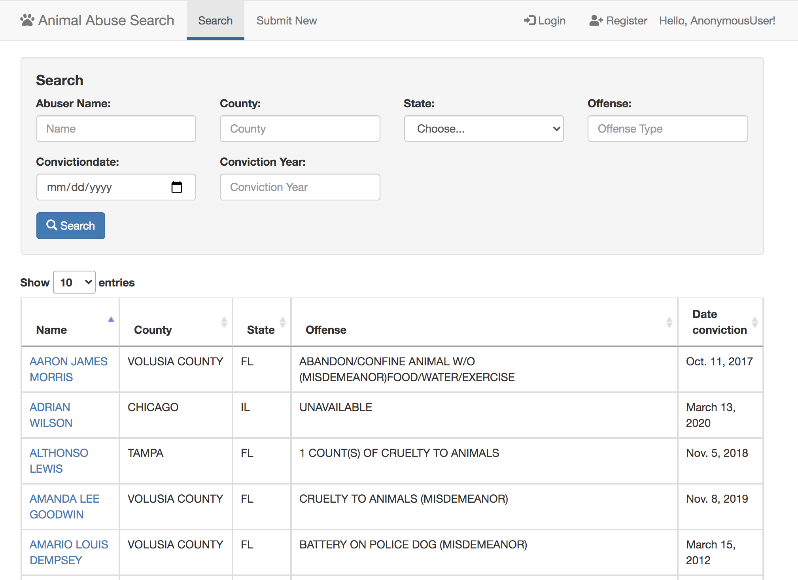
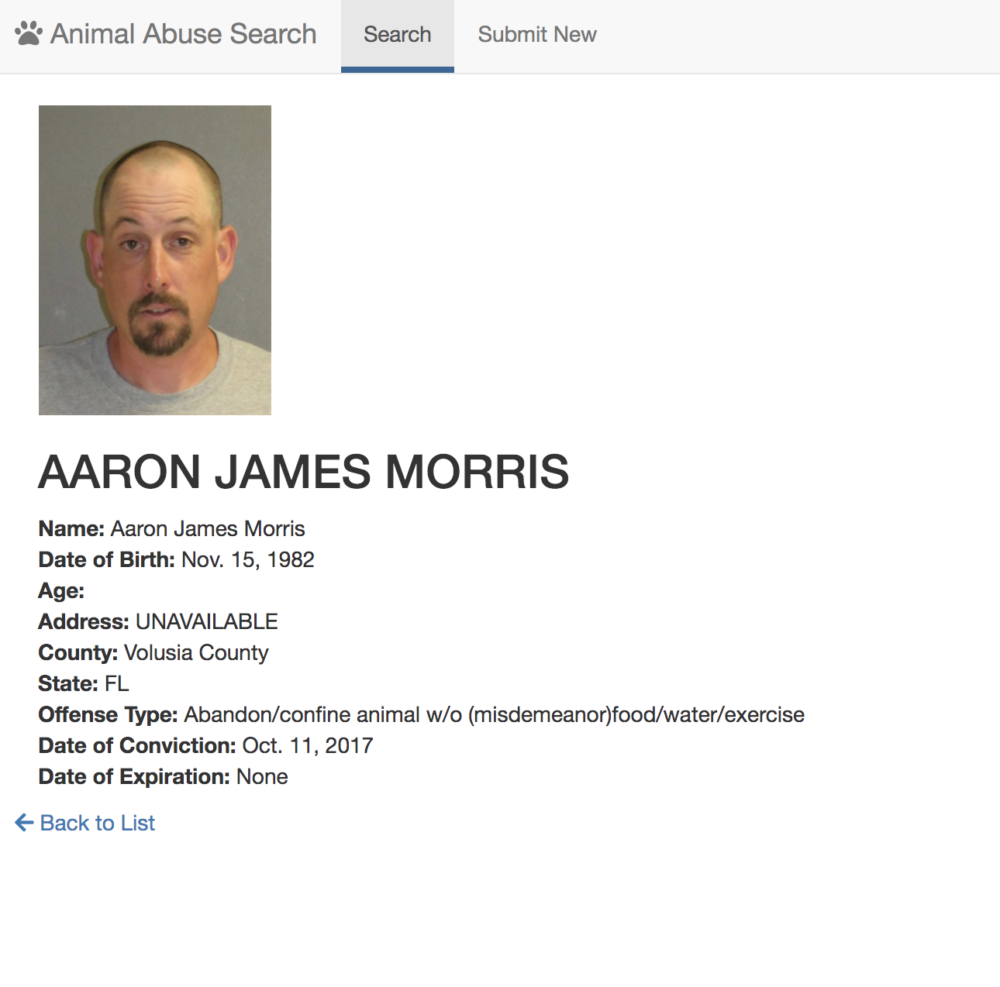

Animal Abuse Registry Web App



Methodologies & Tools
Programming Language | PythonMethodologies | Django, Heroku Server, JavaScript, HTML, CSS
Introduction
The idea would be you could search for a name and it would populate whether or not that individual has a history of animal abuse. This would be crowd sourced data as well as publicly available information as some states have this info public. Then, it would also need to have the ability for people to add records themselves into the platform.
Get in Touch!
HAVE A GREAT OPPORTUNITY FOR ME? |
Feel free to drop me a line